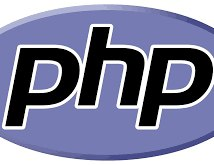

The Evolution of Programming Languages
Programming languages have transformed the way humans interact with machines, enabling the creation of groundbreaking technology that powers the modern world. From the simplicity of assembly languages to the complexity of high-level programming, each step in the evolution of programming languages has unlocked new possibilities.
It all began in the 1940s with the development of machine code, a set of binary instructions executed directly by computers. Soon after, assembly languages made coding more accessible by introducing human-readable mnemonics. The advent of FORTRAN in the 1950s marked the first high-level language, revolutionizing scientific computing.
In the 1990s and beyond, the rise of object-oriented programming languages like Java and C++ changed the software landscape. Meanwhile, web technologies gave birth to JavaScript, HTML, and CSS, forming the backbone of the internet. Today, languages like Python and R are leading the way in data science and AI, while Swift and Kotlin dominate mobile development.
The story of programming languages is far from over. With new innovations such as quantum computing on the horizon, the next chapter is waiting to be written by passionate developers like you!